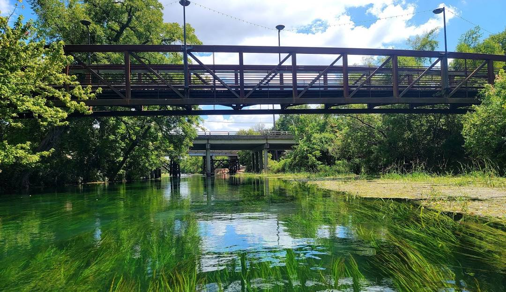
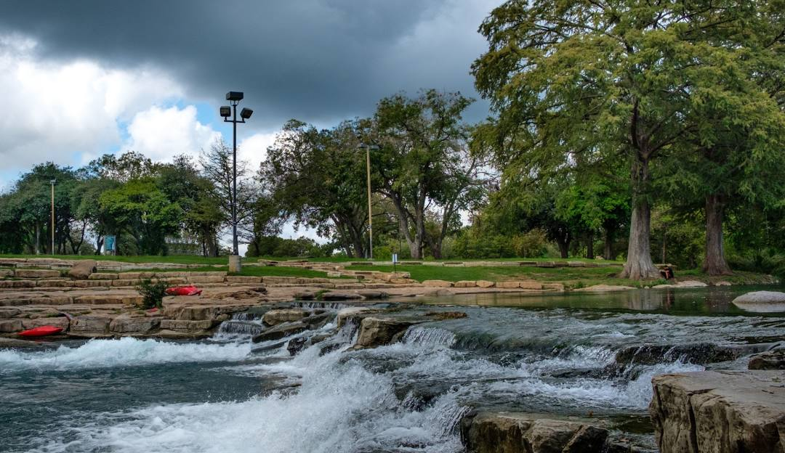
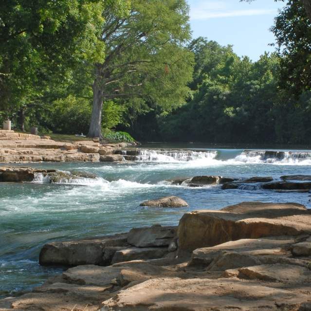

Come float the San Marcos river, located in San Marcus Texas!

Escape the hustle and bustle of everyday life and discover the hidden gem that is San Marcos River in beautiful San Marcos, TX. Nestled in the heart of the Texas Hill Country,

Surrounded by lush greenery and swaying trees, find your favorite spot along the banks, set up a hammock, or simply sprawl out on a blanket. Plan a trip down to San Marcos today!